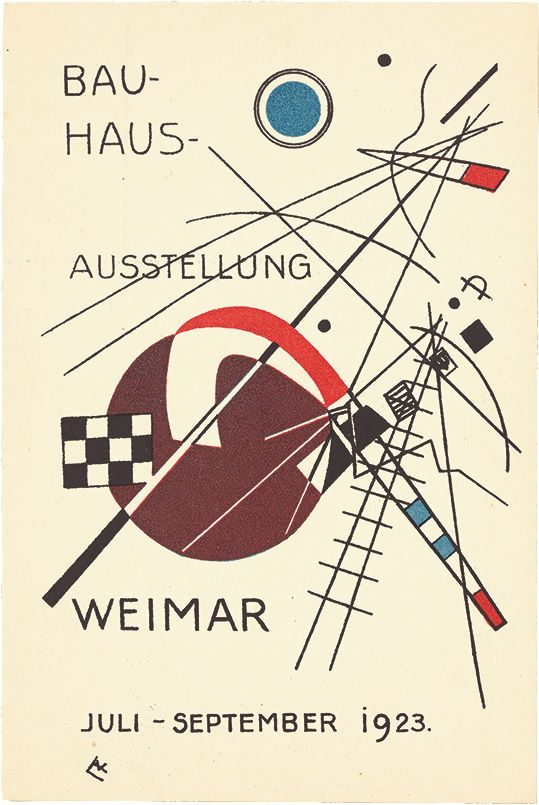

References / Other / 34
Kandinsky’s postcard for the 1923 Bauhaus exhibition
Card no. 3 of the exhibition series: Kandinsky’s circles, checkerboards, and crossing lines under plain sans-serif capitals.
- Source
- Philadelphia Museum of Art: Postcard No. 3 for the Bauhaus Exhibition
- Creator
- Wassily Kandinsky
- Made
- 1923
- Style
- Bauhaus (agent-proposed, not yet reviewed by a person)
- Moods
- Experimental, geometric, dynamic
- Evidence
- Downloaded and inspected the Commons scan (539 × 805 px). Commons gives a Villa Grisebach auction as its source.
- Reviewed
- Rights
- Open license, stored. License: public domain. Rights policy

Context
The Philadelphia Museum of Art catalogues the card as “Postcard No. 3 for the Bauhaus Exhibition, Weimar, July–September 1923.” Its text says the exhibition answered a demand from the Thuringian State Assembly for a progress report, and that it put architecture at the center with an emphasis on joining art and technology. PMA 255859.
The card belongs to a series of 20 postcards for the exhibition, by Feininger, Kandinsky, Klee, Moholy-Nagy, Schlemmer, Bayer, and others. Bauhaus-Karten. MoMA also holds a copy. MoMA 133652.
Observed
- A blue disc in a black ring floats at upper right; a small black dot and a black square sit nearby.
- A large maroon disc at lower left is cut by a red arc and a white wedge.
- Long thin black lines cross the card on several diagonals; two ladder-like bands carry small red, blue, and white blocks.
- A black-and-white checkerboard square sits at left.
- The lettering is thin, even-weight sans-serif capitals: “BAU- HAUS- AUSSTELLUNG WEIMAR” and “JULI – SEPTEMBER 1923”.
- The ground is plain cream paper.
Why it belongs
The card links Kandinsky’s teaching on point, line, and plane to the exhibition’s public face. The shapes are active and diagonal, but the lettering stays quiet and upright.
Compared with Schmidt’s poster, this is the freer, painterly side of Bauhaus geometry.
Borrow
Set small, precise areas of primary color against many thin black lines.
Keep the text in one plain sans-serif weight so that the composition carries the energy.
Measured
Machine-extracted by tools/image-traits.py on . Full measurement.
- Mean chroma
- 0.13
- Palette
- #f8f2d8 78%
- #713f3e 6%
- #3f3630 4%
- #584f44 2%
- #fefcf1 1%
- #71655b 1%
- #da4440 1%
- #887c71 1%

